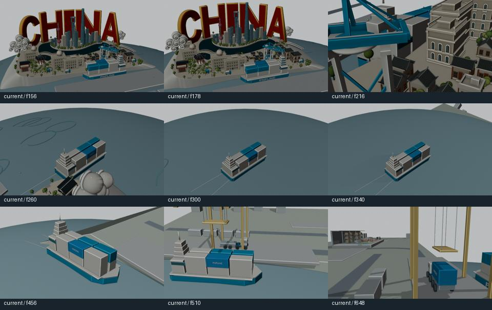
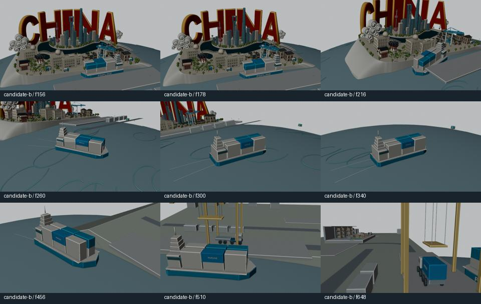
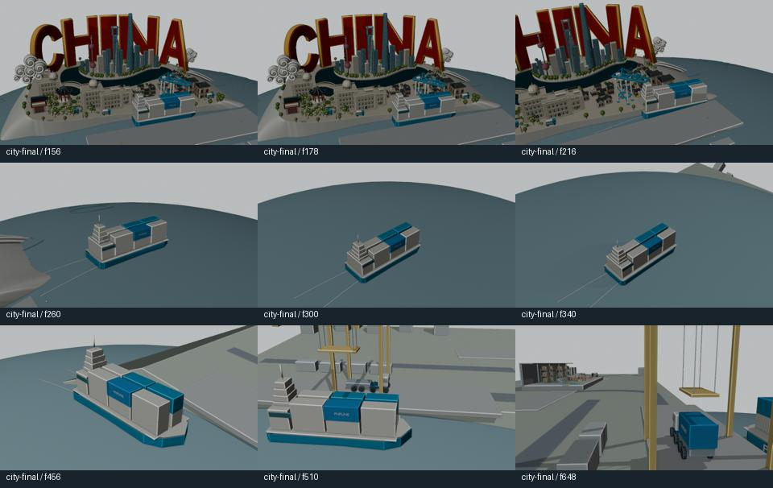

F:\pnpline-landing\hero-section-video\blockout\previz-city-rotation-v001\master-previz-city-rotation-v001.blend현재 통합본과 두 개의 별도 제안 비교. 원본 마스터는 보존했습니다.
같은 프레임 범위 · 원래 속도
f96–672 · 577프레임 · 12fps · 48.083초 · 640×360 · Workbench

f96–672 · 577프레임 · 12fps · 48.083초 · 640×360 · Workbench

f96–672 · 577프레임 · 12fps · 48.083초 · 640×360 · Workbench

| 후보 | 전환 f171–340 누적 회전 | 전환 최고 각속도 | 전체 f96–672 누적 회전 | 선박 최고 회전 속도 |
|---|---|---|---|---|
| 현행 | 226.6° | 159.9°/s | 879.0° | 5.1°/s |
| B: 항로·미국 이동 | 92.5° | 12.3°/s | 721.3° | 34.5°/s |
| 도시 180° 회전 | 63.6° | 6.5°/s | 558.3° | 5.1°/s |
정규화 Quaternion의 최단 회전각 합계. 카메라 월드 회전과 선박 상대 방위는 서로 다릅니다. 상세한 P95·반전·가림·충돌 범위는 지표 JSON과 보고서에 있습니다.
f0–72 카메라·컨테이너는 원본 보존. 크레인 위치·선회/케이블 연결을 조정하고 f73–339 카메라를 연결했습니다.